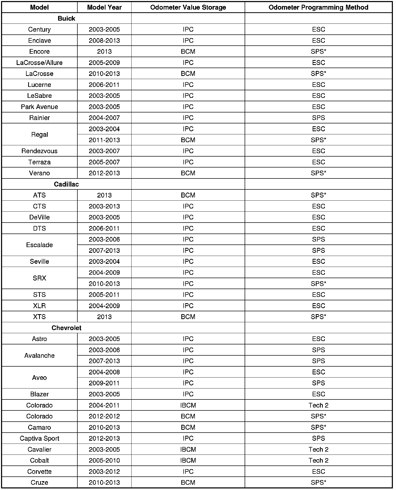
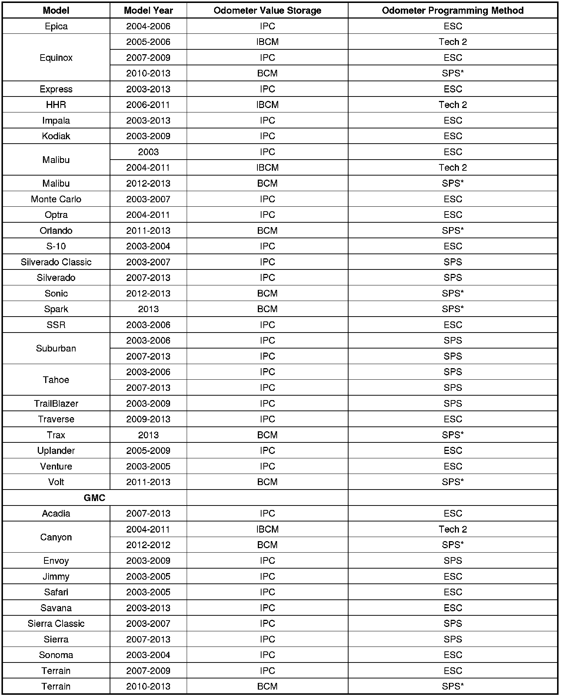
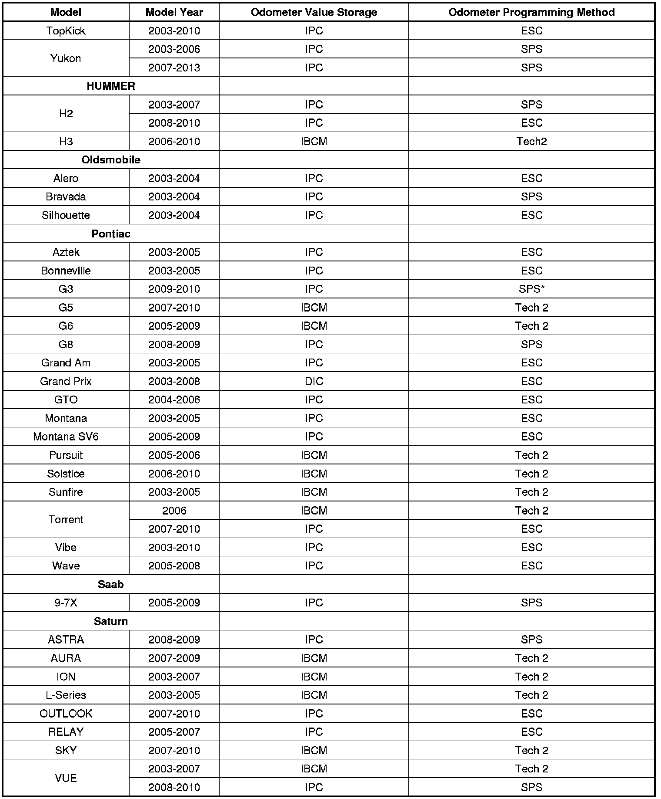

Instruments - IPC Odometer Programming Method
INFORMATIONBulletin No.: 07-08-49-020G
Date: September 17, 2012
Subject: IPC Odometer Programming Method Quick Reference Guide
Models:
2003-2013 GM Passenger Cars and Trucks
Attention:
This bulletin applies to vehicles sold in the U.S. and Canada Only.
Supercede:
This bulletin is being revised to add the 2012-2013 Captiva Sport and 2013 Orlando (Canada). Please discard Corporate Bulletin Number 07-08-49-020F (Section 08 - Body and Accessories).
The purpose of this bulletin is to provide a reference guide to help identify which season odometer programming method to use after replacing the instrument panel cluster (IPC). The three season odometer programming methods in use today are listed below. In addition, this reference guide lists the component where the season odometer value is stored. The season odometer value may be stored in the IPC, the driver information center (DIC) or the integrated body control module (IBCM), also commonly called a body control module (BCM).
Season Odometer Programming Methods in Use Today
1. IPC reprogramming and setup using the service programming system (SPS).
2. Odometer setup at the electronic service center (ESC) when using an exchange IPC/DIC.
3. Tech 2(R) - The Tech 2 is used to set up a replacement BCM, which includes loading the odometer value that is displayed and stored in the IPC. A replacement IPC will display the previously stored vehicle odometer value, communicated from the BCM, after cycling the ignition or driving the vehicle.
*The odometer programming is integrated as part of the BCM programming procedure. It is not a stand-alone event.



Disclaimer